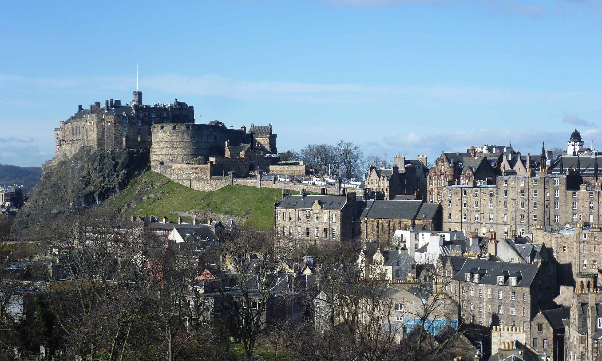

Edinburgh Castle is a historic castle in Edinburgh, Scotland. It stands on Castle Rock, which has been occupied by humans since at least the Iron Age. There has been a royal castle on the rock since at least the reign of Malcolm III in the 11th century, and the castle continued to be a royal residence until 1633. From the 15th century, the castle's residential role declined, and by the 17th century it was principally used as a military garrison. Its importance as a part of Scotland's national heritage was recognised increasingly from the early 19th century onwards, and various restoration programmes have been carried out over the past century and a half.

Pre-history of the Castle Rock
Earliest Habitation
Archaeological investigation has yet to establish when the Castle Rock was first used for human habitation. There is no record of any Roman interest in the location during General Agricola's invasion of northern Britain near the end of the 1st century AD. Ptolemy's map of the 2nd century AD[12] shows a settlement in the territory of the Votadini named "Alauna", meaning "rock place", making this possibly the earliest known name for the Castle Rock.[13] This could, however, refer to another of the tribe's hill forts in the area. The Orygynale Cronykil of Andrew of Wyntoun (c. 1350 – c. 1423), an early source for Scottish history, names "Ebrawce" (Ebraucus), a legendary King of the Britons, as having "byggyd [built] Edynburgh".[14] According to the earlier chronicler, Geoffrey of Monmouth (c. 1100 – c. 1155), Ebraucus had fifty children by his twenty wives, and was the founder of "Kaerebrauc" (York), "Alclud" (Dumbarton) and the "Maidens' Castle".[15] The 16th-century English writer John Stow (c. 1525 – 1605), credited Ebraucus with building "the Castell of Maidens called Edenbrough" in 989 BC.[16] The name "Maidens' Castle" (Latin: Castra or Castellum Puellarum) occurs frequently up until the 16th century.[17] It appears in charters of David I (r. 1124–1153) and his successors in the Kingdom of Scotland,[18] although the reason for it is not known. William Camden's survey of Britain, Britannia (1607), records that "the Britans called [it] Castle Myned Agned [winged rock], the Scots, the Maidens Castle and the Virgins Castle, of certaine young maidens of the Picts roiall bloud who were kept there in old time".[19] According to the 17th-century antiquarian Father Richard Hay, the "maidens" were a group of nuns, who were ejected from the castle and replaced by canons, considered "fitter to live among soldiers".[20] However, this story was considered "apocryphal" by the 19th-century antiquarian Daniel Wilson and has been ignored by historians since.[21] The name may have been derived from a "Cult of the Nine Maidens" type of legend. Arthurian legends suggest that the site once held a shrine to Morgain la Fee, one of nine sisters.[22] Later, St Monenna, said to be one of nine companions, reputedly invested a church at Edinburgh, as well as at Dumbarton and other places.[23] Similar names are shared by many other Iron Age hillforts and may have simply described a castle that had never been taken by force[24] or derived from an earlier Brittonic name like mag dun.
Early Middle Ages
The castle does not re-appear in contemporary historical records from the time of Ptolemy until around AD 600. Then, in the epic Welsh poem Y Gododdin there is a reference to Din Eidyn, "the stronghold of Eidyn". This has been generally assumed to refer to the Castle Rock.[31] The poem tells of the Gododdin King Mynyddog Mwynfawr,[32] and his band of warriors, who, after a year of feasting in their fortress, set out to do battle with the Angles at "Catreath" (possibly Catterick) in Yorkshire. Despite performing glorious deeds of valour and bravery, the poem relates that the Gododdin were massacred.[33]
The Irish annals record that in 638, after the events related in Y Gododdin, "Etin" was besieged by the Angles under Oswald of Northumbria, and the Gododdin were defeated.[34] The territory around Edinburgh then became part of the Kingdom of Northumbria, which was itself absorbed by England in the 10th century. Lothian became part of Scotland, during the reign of Indulf (r.954–962).[35]
High Middle Ages
The first documentary reference to a castle at Edinburgh is John of Fordun's account of the death of King Malcolm III (1031–1093). Fordun describes his widow, the future Saint Margaret, as residing at the "Castle of Maidens" when she is brought news of his death in November 1093. Fordun's account goes on to relate how Margaret died of grief within days, and how Malcolm's brother Donald Bane laid siege to the castle. However, Fordun's chronicle was not written until the later 14th century, and the near-contemporary account of the life of St Margaret by Bishop Turgot makes no mention of a castle.[37] During the reigns of Malcolm III and his sons, Edinburgh Castle became one of the most significant royal centres in Scotland.[38] Malcolm's son King Edgar died here in 1107.[39]
Malcolm's youngest son, King David I (r.1124–1153), developed Edinburgh as a seat of royal power principally through his administrative reforms (termed by some modern scholars the Davidian Revolution).[40] Between 1139 and 1150, David held an assembly of nobles and churchmen, a precursor to the parliament of Scotland, at the castle.[38] Any buildings or defences would probably have been of timber,[41] although two stone buildings are documented as having existed in the 12th century. Of these, St. Margaret's Chapel remains at the summit of the rock. The second was a church, dedicated to St. Mary, which stood on the site of the Scottish National War Memorial.[41] Given that the southern part of the Upper Ward (where Crown Square is now sited) was not suited to be built upon until the construction of the vaults in the 15th century, it seems probable that any earlier buildings would have been located towards the northern part of the rock; that is around the area where St. Margaret's Chapel stands. This has been suggested that the chapel is the last remnant of a square, stone keep, which would have formed the bulk of the 12th-century fortification.[42] The structure may have been similar to the keep of Carlisle Castle, which David I began after 1135.[43]